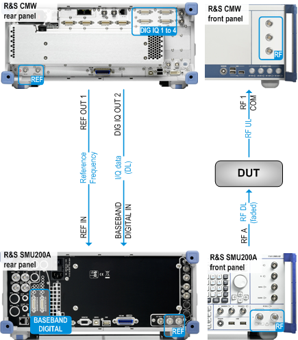

For the scenario "1CC - IQ Out, RF In - 1x1", the uplink RF signal is routed via an RF COM connector on the front panel. The downlink digital I/Q signal is routed via a DIG IQ OUT connector on the rear panel. This connector is only available if an I/Q board is installed (option R&S CMW-B510x/-B520x). Additional instruments can be inserted into the downlink path to manipulate the downlink signal.
A typical use case is to insert an R&S SMU200A into the downlink path to superimpose fading on the downlink signal. The following figure provides an overview of this setup. In this example, the R&S SMU200A is synchronized to a 10-MHz reference signal provided by the R&S CMW. It is also possible to synchronize the R&S CMW to the R&S SMU200A.
The following figure shows a possible rear panel cabling using the first I/Q board (DIG IQ 1 to 4).
